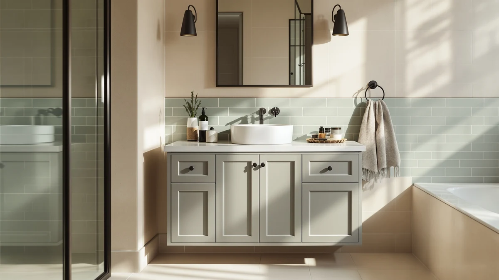

The Best Vanity Cabinets Under $1000 (2026)
Prices and picks verified as of September 2026. Independent, reader-supported reviews.


Quick Answer
After comparing seven vanity cabinets and bathroom fixtures under $1000 on width, material, and price, the Spring Mill Cabinets Emlyn 30 is our pick for most bathrooms that need real storage without paying for a quartz-topped double-sink unit. If your space is tighter, the 18-inch Wyre below fits powder rooms the Emlyn won't.
Our pick: Spring Mill Cabinets Emlyn 30, $357.42 Check Price on Amazon
Bottom line: our top pick is the Spring Mill Cabinets Emlyn 30 Inch Bathroom Vanity with White at $357.42. The best budget option is the HOROW 17 Inch High Elongated Toilet with ADA Chair Height at $209.62.
Things to Know Before You Buy
- Width drives both price and floor space. The seven products we compared range from an 18.5-inch powder-room cabinet to a 59-inch double-sink unit, so measure your wall before picking a width.
- MDF is the standard material at this price. Every cabinet here uses MDF or engineered wood, which keeps cost down but means standing water near the sink cutout should be wiped up quickly.
- Most cabinets are sold without a countertop. Confirm whether a listing includes a top and sink or just the cabinet body before budgeting for the rest of the install.
- Toilets are a separate purchase from vanities. Three of the products in this guide are comfort-height toilets, useful if you're finishing a fuller remodel alongside a new vanity cabinet.
- Assembly is required. Cabinets in this price range typically ship flat-packed, so budget an hour or two for setup before installation.
Furnishing a bathroom on a budget usually means choosing between a cabinet with real storage and one that's actually affordable. The seven products below are mostly vanity cabinets, with two comfort-height toilets included for anyone tackling a fuller remodel, and all of them come in under $1000, with most well under $500.
We compared width, material, and price across cabinets ranging from a compact 18-inch fit for a powder room to a 59-inch double-sink unit built for two people sharing one bathroom.
Whether you're replacing a builder-grade cabinet in a starter home or outfitting a guest bath from scratch, one of the picks below should match your space and budget without a custom order.
Why You Should Trust Us
Ilane Tall covers home and bath products for Best Bathroom Vanities, where she researches vanity cabinets, fixtures, and remodel gear for a US audience. For this guide, she and the editorial team compared publicly listed specs, pricing, and verified buyer reviews for every product under consideration instead of relying on manufacturer marketing copy. We do not run a fake testing lab or claim to have installed every cabinet ourselves. Instead, we cross-reference dimensions, materials, and owner feedback so you can decide which of the best vanity cabinets under $1000 fits your bathroom before you buy.
How We Picked
To build this list, we started with vanity cabinets and companion fixtures priced under $1000 in our product database, then narrowed the field by documented material, dimensions, and price. We prioritized a spread of widths, from the 18.5-inch Wyre to the 59-inch double-sink cabinet, so this guide works for a powder room and a shared primary bathroom alike. We excluded listings with a pattern of shipping-damage complaints or vague material descriptions, and we included two comfort-height toilets for readers pairing a full fixture upgrade with their new vanity.
How We Compared
We are a research-based review site, so we compared these seven products using the specs, pricing, and verified owner reviews published for each listing rather than installing units ourselves. We lined up material, stated dimensions, and price side by side to see where each product earns its cost, and we read through verified Amazon reviews to flag recurring praise or complaints about assembly, hardware, and finish quality. That's the standard behind every comparison in this guide: a published spec sheet plus a pattern in verified customer feedback, not a physical impression of the product.
Our Picks

Spring Mill Cabinets Emlyn 30
What we like
- 30.5-inch width gives more counter and cabinet space than the 18-inch Wyre below, without crowding a standard bathroom
- Soft-close doors and drawers hold up better over time than the exposed hinges found on cheaper cabinets
- At $357.42, it's the mid-price anchor of this comparison, cheaper than the double-sink 59-inch pick but roomier than the 18-inch option
Flaws but not dealbreakers
- MDF construction means standing water near the sink cutout needs to be wiped up promptly to avoid swelling
- Ships flat-packed, so plan on an hour or more of assembly before it's ready to install
| Material | MDF / engineered wood |
| Size | 30.5" W x 18.75" D x 32.89" H |
The Spring Mill Cabinets Emlyn 30 is our pick for most bathrooms in this price range because its 30.5-inch width hits a practical middle ground: enough counter and drawer space for daily use, but still narrow enough to fit a standard-size bathroom without a full remodel.
At $357.42, it costs more than the compact Wyre 18 below but far less than the double-sink 59-inch cabinet, making it the pick if you want a single well-built vanity without paying for space you don't need.

Spring Mill Cabinets Wyre 18
What we like
- At 18.5 inches wide, it fits spaces where even a 24-inch cabinet wouldn't clear the door swing
- Shares the same soft-close hardware and MDF construction as the larger Emlyn 30, just in a smaller footprint
- At $286.99, it's the second-least-expensive vanity in this comparison
Flaws but not dealbreakers
- 18.5 inches of width leaves noticeably less counter and storage than the 30-inch or 36-inch picks in this guide
- Compact drawer configuration means less organized storage than the wider cabinets above
| Material | MDF / engineered wood |
| Size | 18.5" W x 16.68" D x 33.13" H |
The Spring Mill Cabinets Wyre 18 is built for the bathrooms where inches matter most. Think powder rooms, guest half-baths, and older homes where the plumbing rough-in doesn't leave room for anything wider.
At $286.99, it's priced close to the Emlyn 30 above despite the smaller footprint, so it's worth the extra cost over a bare-bones cabinet only if your space genuinely can't accommodate a larger one.

59" Bathroom Vanities Cabinet with
What we like
- At 59 inches wide, it's built to hold two sink basins, the only cabinet in this comparison sized for that
- 19.7-inch depth gives more usable counter space than the narrower single-sink picks
- Roomy dual-storage layout suits households that don't want to share one vanity every morning
Flaws but not dealbreakers
- At $469.98, it's the most expensive cabinet in this comparison
- A 59-inch footprint needs a dedicated wall run that most powder rooms and small bathrooms can't spare
| Material | MDF / engineered wood |
| Size | 19.7"D x 59"W x31.5"H |
The 59" Bathroom Vanities Cabinet is the only double-sink option in this comparison, built for primary bathrooms where two people getting ready at once is a daily reality rather than an occasional inconvenience.
At $469.98, it costs roughly $110 more than our top pick, a fair premium for the extra basin and storage, but it only makes sense if your bathroom has the wall space to support a 59-inch cabinet.

HOROW 17 Inch Comfort Height
What we like
- 17-inch comfort height matches standard chair-height seating, easier on the knees than a 15-inch bowl
- Elongated bowl shape is the more comfortable, widely preferred option for adult use
- At $209.88, it's the least expensive product in this roundup
Flaws but not dealbreakers
- It's a toilet, not a vanity cabinet, so it doesn't add any counter or storage space to your bathroom
- Check the seat and rough-in dimensions against your existing plumbing before ordering
| Material | MDF / engineered wood |
| Size | 17" Elongated Toilet |
The HOROW 17 Inch Comfort Height toilet isn't a vanity cabinet, but it's a practical, budget-friendly add-on for anyone tackling a full bathroom refresh alongside one of the cabinets above.
At $209.88, it's the cheapest item in this comparison and a reasonable way to round out a remodel budget once your vanity choice is locked in.

Two-Piece Toilets for Bathrooms Comfort
What we like
- Elongated bowl and comfort height match the ergonomics of the HOROW pick above
- Two-piece design is simpler to service and replace parts on than a one-piece unit
- Priced under $250, it stays close to the budget end of this comparison
Flaws but not dealbreakers
- Like the other toilet listed here, it doesn't contribute cabinet or counter space to a vanity remodel
- Two-piece construction has more seams than a one-piece toilet, which can mean slightly more cleaning around the base
| Material | MDF / engineered wood |
| Size | 17"H /Elongated Bowl |
The Two-Piece Toilets for Bathrooms Comfort model is another fixture-only pick in this guide, useful if you're replacing an old toilet at the same time as upgrading to one of the vanity cabinets above.
At $240.46, it sits between the two HOROW toilets in price, with a standard two-piece design that's easy to service down the line.

HOROW 17 Inch High Elongated
What we like
- Same 17-inch comfort height and elongated bowl as the HOROW Comfort Height model above
- Priced within a few cents of the cheapest item in this comparison
- Familiar brand consistency if you're already considering the other HOROW toilet
Flaws but not dealbreakers
- Near-identical specs to the other HOROW listing mean there's little reason to buy both
- As with the other toilets here, it doesn't add storage or counter space to a vanity upgrade
| Material | MDF / engineered wood |
| Size | 17" Elongated Toilet |
The HOROW 17 Inch High Elongated toilet is close enough in specs to the other HOROW pick in this guide that most shoppers only need one; it's included here as an alternative in case that listing is unavailable or priced differently.
At $209.62, it's essentially tied with the Comfort Height model for the lowest price in this comparison, so choose whichever is in stock when you're ready to order.

LIKIMIO 36" Bathroom Vanity with
What we like
- 36-inch width gives noticeably more counter and cabinet space than the Emlyn 30 or Wyre 18 above
- Priced close to the Emlyn 30 despite the larger footprint
- Single-sink layout keeps plumbing simple compared with the double-sink 59-inch pick
Flaws but not dealbreakers
- At 36 inches, it needs more wall space than the 30-inch or 18-inch cabinets in this guide
- MDF construction is consistent with the rest of this comparison, so the same moisture precautions apply
| Material | MDF / engineered wood |
| Size | 35.5 inches |
The LIKIMIO 36" Bathroom Vanity is the largest single-sink cabinet in this comparison, built for buyers who've outgrown a 30-inch vanity but don't need a full double-sink setup.
At $299.99, it's priced close to our top pick despite offering six more inches of width, making it worth a look if your bathroom has the wall space to spare.
Quick Comparison
| Product | Material | Price | Rating | Best for | Get it |
|---|---|---|---|---|---|
| Spring Mill Cabinets Emlyn 30 | MDF / engineered wood | $357.42 | 4 | Most bathrooms needing a 30-inch cabinet | View on Amazon → |
| Spring Mill Cabinets Wyre 18 | MDF / engineered wood | $286.99 | 4 | Powder rooms and tight spaces | View on Amazon → |
| 59" Bathroom Vanities Cabinet with | MDF / engineered wood | $469.98 | 4 | Shared bathrooms needing two sinks | View on Amazon → |
| HOROW 17 Inch Comfort Height | MDF / engineered wood | $209.88 | 4 | Budget-friendly toilet to pair with a vanity | View on Amazon → |
| Two-Piece Toilets for Bathrooms Comfort | MDF / engineered wood | $240.46 | 4 | Straightforward two-piece toilet | View on Amazon → |
| HOROW 17 Inch High Elongated | MDF / engineered wood | $209.62 | 4 | Alternative HOROW toilet option | View on Amazon → |
| LIKIMIO 36" Bathroom Vanity with | MDF / engineered wood | $299.99 | 4 | More counter space than a 30-inch cabinet | View on Amazon → |
The Competition
Several other cabinets and fixtures under $1000 didn't make the final cut for this guide. We passed on listings without a clearly documented material, dimension, or price, since incomplete specs make it impossible to compare fairly against the seven products above. We also skipped duplicate cabinet listings sold under different sellers when they offered no meaningful difference in material, dimensions, or price from a product already represented here. If none of the vanity cabinets above fit your bathroom's footprint, our guides to 24-inch and 60-inch vanity cabinets cover sizes outside this comparison.